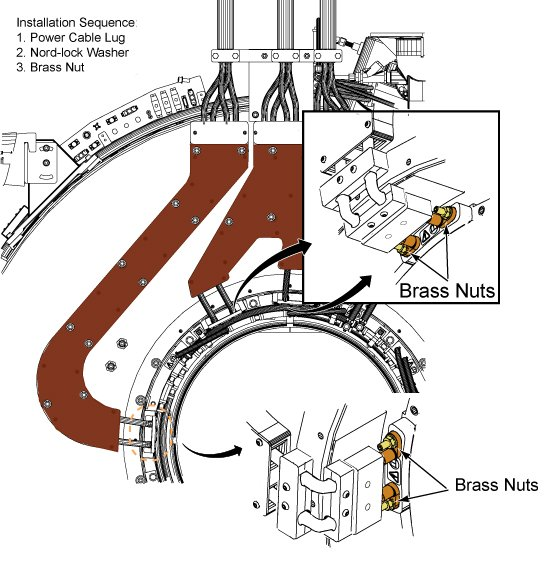

Illustration 52: Installation Sequence of the Stops and Wedges

Illustration 53: Nord-lock washers
NOTE:
Observe the following:
Always use the new Nord-lock washers
that come with the FRU package. DO NOT reuse
the old Nord-lock washers.
Nord-lock washers consist of two pieces,
which are generally glued together. Always use a complete set with
two pieces joined together in correct orientation. DO NOT use a separated
single piece.